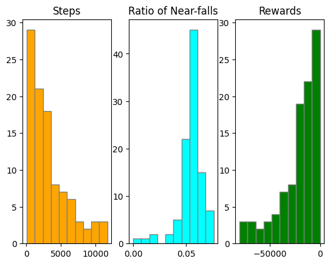

This assignment is to code and run experiments with the Cliff Walking implemented in Gymnasium.
The assignment consists of two parts: (1) run several fixed policies; and (2) learn an optimal policy using Policy Iteration method and run the policy.
The Cliff Walking environment is one of the classic Reinforcement Learning problems. It is implemented in The enironment is a terrain with a cliff that drops off into the water. The goal of the agent is to navigate in the environment and walk from the start on one side of the cliff to the goal on the other side of the cliff witout avoiding falling off the cliff.
The environment is organized in a 4 x 12 grid world. The start state is 36 (left-bottom corner, position (3, 0)), and the goal state is 47 (right-bottom corner, position (3,11)) -- based on 0-based indices. Cells in the bottom row, except for the start and goal states, are cliff.
The environment is stochastic -- the ground is supposed to be very slippery. When the agent attempts to move to one direction (UP, RIGHT, DOWN, LEFT), it will only be sucessful 33% (= 1/3) of the time -- the agent may be put to the cell perpendicular to the intended direction for other times (33% (= 1/3) * 2 = 66% (=2/3)).
For this assignment, we will use the environment implemented in Gymnasium and write code for the Policy Iteration algorithm to derive an optimal policy.
For more information on the environment, look at the Gymnasium Documentation page and their Github.
Part 1. Fixed Policies
You start by reading and understanding the start-up code "580-hw2-startup.ipynb" (and its html version). Also run all cells to ensure the code is compatible with your platform.
Modify the function 'run()' so that it computes and returns the following three values:
Note the function is passed with a pre-made policy. It is a fixed policy where actions were pre-assigned randomly. The policy assigns with exactly one action (up, rigtht, down, left). But the specified action may or may not take place because of the hill is slippery, thus making a stochastic environment (explained in the Gymnasium environment page).
In the code, the function is called once with the policy generated based on the random seed=17.
(*) Your task for this part is to try a few other policies and compare their performances.
*** Policy *** [[2 3 0 0 1 2 3 1 0 0 1 1] [3 1 2 2 0 2 0 0 2 1 1 2] [0 0 2 3 2 3 1 0 2 2 2 2] [1 0 2 0 1 0 2 1 1 2 0 1]] Mean steps: 3217.05 Stdev steps: 2887.958055010495 Mean near_falls: 181.13 Stdev near_falls: 164.12474859082042 Mean reward: -21148.92 Stdev reward: 19122.36536555036 |
 |
IMPORTANT: Show results and write answers to the questions shown below in the write-up as well.
Part 2. Optimal Policy by Policy Iteration
Now we try to find the optimal policy. To that end, you implement the Policy Iteration algorithm (Sutton & Barto, 2ed, ch 4.3, p. 80). The iteration should terminate when the policy becomes stable (which is the approximation of the optimal policy).
(*) Your task for this part is to implement the algorithm by yourself and derive the optimal policy. All implementation details are up to you!
Use gamma (discount rate) = 0.8, and theta = 1e-6.
Important REQUIREMENTS:
Be sure to add a good amount of comments in the code.
REMEMBER: The environment dynamics of this environment is known already and coded in the source code of the environment. In particular, the python dictionary 'self.P' in the class 'CliffWalkingEnv' contains pretty much all the environment dynamics information.
After you derived the optimal policy,
Submit the following:
IMPORTANT Reminder: Every code or documentation file must have your name, the course name (CSC 580) and the assignment number (HW#2) at the top of the file.
In the submission box 'HW#2'. Do NOT zip the files -- Upload all files separately.